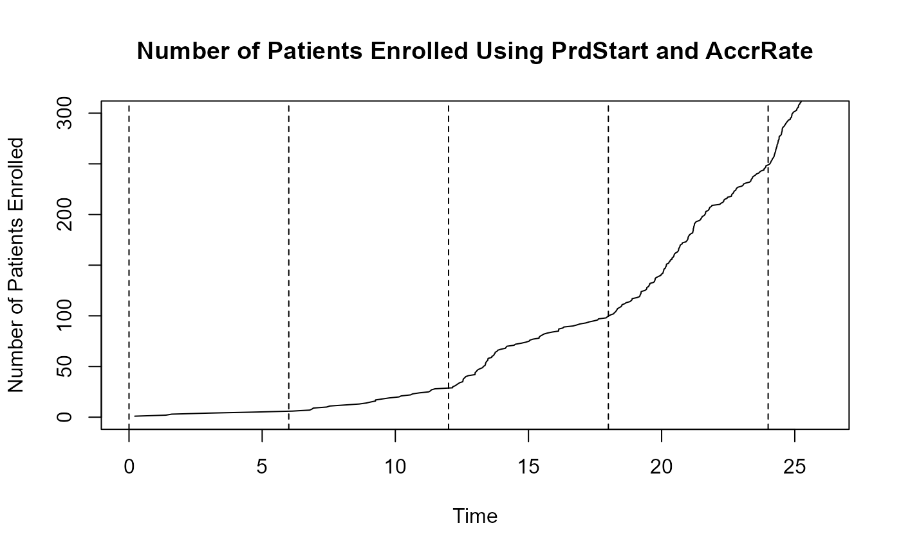
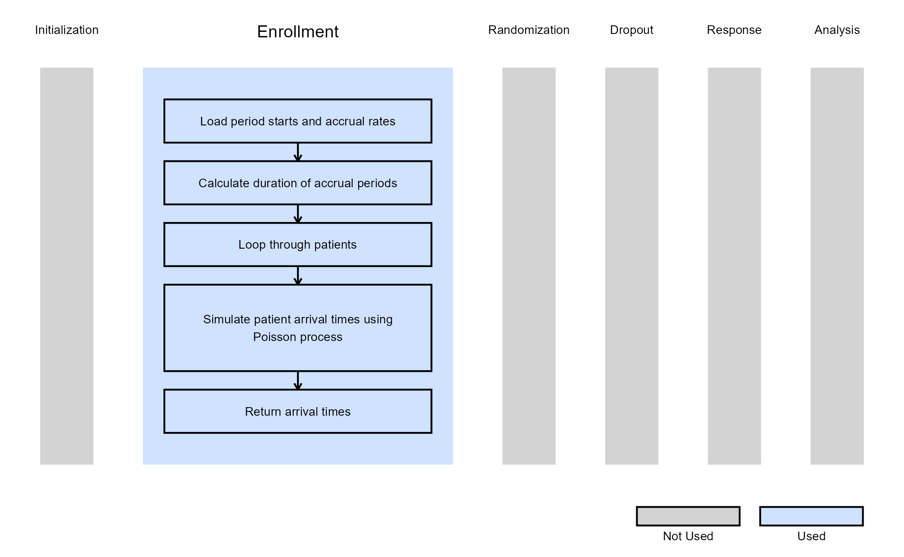

Generate Patient Arrival Times with Poisson Process
J. Kyle Wathen
October 31, 2025
GeneratePoissonArrival.RmdThis example is related to the Integration Point: Enrollment. Click the link for setup instructions, variable details, and additional information about this integration point.
Introduction
The following examples demonstrate how to integrate the capability to generate patient arrival times following a Poisson process with a ramp-up phase into East Horizon or East using R functions. They showcase different approaches for simulating arrival times based on a Poisson process, offering flexibility in modeling patient recruitment dynamics.
Once CyneRgy is installed, you can load this example in RStudio with the following commands:
CyneRgy::RunExample( "GeneratePoissonArrival" )Running the command above will load the RStudio project in RStudio.
East Workbook: GeneratePoissonArrival.cywx
RStudio Project File: GeneratePoissonArrival.Rproj
In the R directory of this example you will find the following R file:
- GeneratePoissonArrival.R - This file provides the code used for the two examples below.
Example 1 - Ramp-Up In Accrual Using UserParam
This example is related to this R file: GeneratePoissonArrival.R
In this example, we use seven accrual rates as user parameters in East Horizon after selecting the R script. When custom variables are provided, the built-in variables PrdStart and AccrRate from East Horizon are ignored. Note that in this example, the start of the accrual periods cannot be specified. See Example 2 for that. Unless otherwise stated in East Horizon, the default time unit is months. Refer to the table below for the definitions and values of the user-defined parameters used in this example.
| User parameter | Definition | Value |
|---|---|---|
| Accrual rate in the first unit of time | 3 | |
| Accrual rate in the second unit of time | 6 | |
| Accrual rate in the third unit of time | 10 | |
| Accrual rate in the fourth unit of time | 15 | |
| Accrual rate in the fifth unit of time | 18 | |
| Accrual rate in the sixth unit of time | 25 | |
| Accrual rate in the seventh unit of time | 35 |
Warning, the first time unit is 0, not 1. This means:
- At time 0, the accrual rate is dRate1 (3) per unit time.
- At time 1, the rate changes to dRate2 (6).
- At time 2, the rate changes to dRate3 (10), and so on.
- After time 6, the accrual rate remains at dRate7 (35).
For example, if the time unit is months, this setup models a ramp-up over a six-month period, with the accrual rate stabilizing at dRate7 (35) from month 6 onward. This could produce an accrual pattern resembling the following:

The figure below illustrates where this example fits within the R integration points of Cytel products, accompanied by a flowchart outlining the general steps performed by the R code.

Example 2 - Ramp-Up In Accrual Using Built In Input
This example is related to this R file: GeneratePoissonArrival.R
This example does not use any user-defined parameters, but uses built-in parameters specified in East Horizon. We use the same file as before, but we now use built-in inputs of start periods and expected accrual rates (Starting at Time and Average Subjects Enrolled in the Enrollment Card) to implement a user-specified ramp-up in accrual using Poisson. Refer to the table below for more information.
| Name of the parameter in East Horizon | Where to find the parameter in East Horizon | Name of the variable in the R script | Value |
|---|---|---|---|
| Starting at Time (Period 1) | Enrollment Card | 0 | |
| Starting at Time (Period 2) | Enrollment Card | 6 | |
| Starting at Time (Period 3) | Enrollment Card | 12 | |
| Starting at Time (Period 4) | Enrollment Card | 18 | |
| Starting at Time (Period 5) | Enrollment Card | 24 | |
| Average Subjects Enrolled (Period 1) | Enrollment Card | 1 | |
| Average Subjects Enrolled (Period 2) | Enrollment Card | 4 | |
| Average Subjects Enrolled (Period 3) | Enrollment Card | 12 | |
| Average Subjects Enrolled (Period 4) | Enrollment Card | 24 | |
| Average Subjects Enrolled (Period 5) | Enrollment Card | 48 |
This means:
- From time 0 to 6, the expected accrual rate is 1 patient per time unit.
- From time 6 to 12, the rate increases to 4 patients per time unit.
- From time 12 to 18, the rate further increases to 12 patients per time unit.
- From time 18 to 24, the expected accrual rate is 24.
- After time unit 24, the accrual rate is assumed to be 48 patients per time unit.
This would yield accrual patterns resembling the following figure, with dashed lines marking the time points where accrual rates change:

The figure below illustrates where this example fits within the R integration points of Cytel products, accompanied by a flowchart outlining the general steps performed by the R code.
